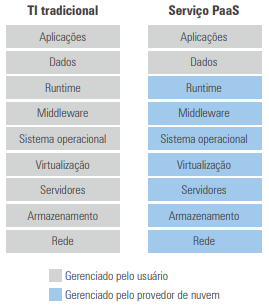
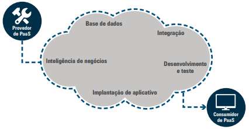

---
---
{% include head-aula.html page-title="Aula 15 - InfraTI" %}
{% include heading-aula.html heading="Computação em Nuvem – PaaS (Plataforma como Serviço)" %}
1. Definição de PaaS (plataforma como serviço)
Modelo que fornece um ambiente completo para desenvolvimento de aplicações, incluindo (Chess & Franklin, 2013):

- Infraestrutura gerenciada:
- Servidores virtuais
- Armazenamento em nuvem
- Redes configuráveis
- Software pré-instalado:
- Sistemas operacionais (Windows/Linux)
- Middleware (Apache, IIS)
- Ambientes de runtime (.NET, Java)
2. Componentes de PaaS

2.1 Estrutura Básica
- Infraestrutura de IaaS + Sistema Operacional
- Middleware e Runtime (ambiente de execução)
- Arquitetura multi-tenant: instância única para múltiplos usuários
2.2 Microsoft Azure PaaS
Características Principais (Microsoft, 2019):
- Desenvolvimento de Alta Produtividade:
- Linguagens: .NET, Java, Node.js, PHP, Python, Ruby, Docker
- Integração com Visual Studio e Azure Marketplace
- Templates pré-configurados para implantação
- Plataforma Gerenciada:
- Balanceamento de carga automático
- Domínios personalizados e certificados SSL
- Monitoramento via Application Insights
- Aplicativos Corporativos:
- Conexão segura a SAP, Oracle e SharePoint
- Azure Active Directory para autenticação
- Implantação em ambientes isolados
Serviços Azure App Services:
- Aplicativos Web:
- CI/CD integrado com repositórios Git
- Escalonamento global baseado em demanda
- Analytics de desempenho em tempo real
- Aplicativos para Contêineres:
- Implantação via Docker Hub ou registros privados
- Atualizações automáticas sem downtime
- Sincronização offline para apps móveis
- Integração Híbrida:
- Conexão VPN a datacenters locais
- Hubs de notificação para milhões de dispositivos
- Dimensionamento automático inteligente
2.3 AWS Elastic Beanstalk
- Implantação Automatizada:
- Suporte a .NET, PHP, Java, Python, Ruby
- Integração com AWS CodePipeline
- Escalabilidade:
- Auto Scaling com métricas personalizáveis
- Computação serverless com AWS Lambda
- Casos de Uso:
- IoT com AWS IoT Core
- Big Data com Amazon Redshift
3. Uso de PaaS
3.1 Benefícios Estratégicos
- Redução de Custos:
- Elimina licenças de software locais
- Modelo pay-per-use
- Inovação Acelerada:
- Prototipação rápida
- Integração com AI/ML
3.2 AWS Elastic Beanstalk
- Recursos Principais:
- Implantação em 5 linguagens
- Auto Scaling integrado
- Monitoramento CloudWatch
- Caso de Uso:
- Aplicações serverless com Lambda
- IoT com AWS IoT Core
4. Considerações para Adoção
- Gestão de Riscos:
- Backup cross-region
- Plano de disaster recovery
- Integração Híbrida:
- Conexão VPN com datacenters locais
- API Gateway para sistemas legados
Veja o seguinte vídeo para melhor entendimento: link
5. Considerações Finais
- Para PMEs: Acesso a infraestrutura enterprise
- Para Grandes Empresas: Complemento à infraestrutura existente
- Tendências: PaaS + Serverless + Edge Computing
{% include nav-aula.html materia="infraestruturadeti" aula="16" %}
{% include footer.html %}